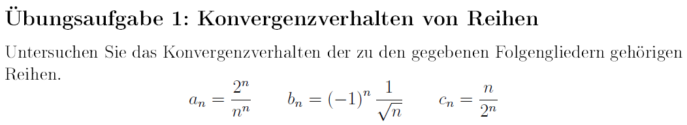

Die Übungsaufgaben sind dazu gedacht, Ihnen zu zeigen, wie die Methoden, die in der
Vorlesung vorgestellt wurden, in Anwendung gebracht werden. Sie erhalten die Lösungen
hierzu entweder in den Tutorien oder auf der ISIS-Seite des Kurses als Dokument oder
Lehrvideo.
1. Übungsaufgabe

Übungsblatt 4; Übungsaufgabe 1
Video zu Übungsaufgabe 1 (1/2)
Konvergenz von Reihen - Konvergenzkriterien
Video zu Übungsaufgabe 1 (2/2)
Konvergenz von Reihen - Konvergenzkriterien II
2. Übungsaufgabe
Übungsblatt 4; Übungsaufgabe 2
Video zu Übungsaufgabe 2 (1/2)
Konvergenz von Reihen - Konvergenz mit Parameter
Video zu Übungsaufgabe 2 (2/2)
Konvergenz von Reihen - Konvergenz mit Parameter II
3. Übungsaufgabe
Übungsblatt 4; Übungsaufgabe 3
Video zu Übungsaufgabe 3
Vollständige Induktion - Die Gaußsche Summenformel